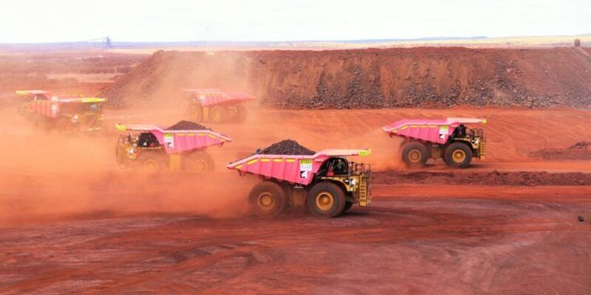
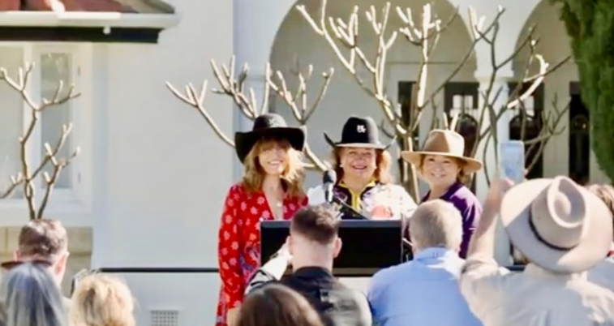
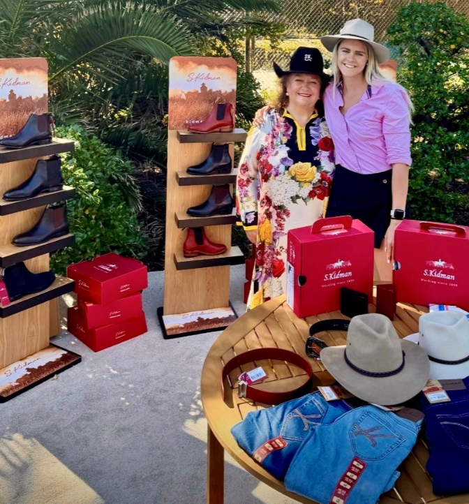

Salud & Bienestar
Equipamiento hospitalario avanzado, traslados médicos comarcales e investigación sobre enfermedades raras.
Áreas de Impacto
Equipamiento hospitalario avanzado, traslados médicos comarcales e investigación sobre enfermedades raras.

Becas de excelencia académica, recursos tecnológicos para colegios y apoyo a familias en zonas agrícolas.

Proyectos de empleo local, transmisión lingüística y cultural con comunidades indígenas aliadas.

Subvenciones a clubes locales, apoyo a atletas olímpicos y programas de reintegración para veteranos de guerra.

La fundación y Hancock Prospecting respaldan activamente a las selecciones y clubes de netball en Australia, proveyendo becas, cobertura de desplazamientos y equipamiento para proyectar el talento femenino al máximo nivel internacional.

En el corazón de los complejos industriales de Pilbara, las inversiones de vanguardia no solo crean miles de empleos estables, sino que financian centros de atención médica de urgencia y redes de agua potable para los poblados vecinos.

Fondos extraordinarios otorgados directamente a municipios remotos, cooperativas agrícolas y centros asistenciales de barrio para modernizar salas de primeros auxilios, adquirir generadores y reparar escuelas locales.

A través de la histórica red agropecuaria S. Kidman & Co, la fundación apoya escuelas de formación en oficios tradicionales rurales, garantizando el relevo generacional y la vitalidad de las comarcas ganaderas.
Mesas redondas y consultas directas con familias de agricultores, representantes de pueblos originarios y directores de centros comunitarios para alinear las donaciones con las prioridades más urgentes del terreno.
Ayudas anuales que cubren la matrícula, manutención y transporte para estudiantes destacados de zonas remotas.
Educación · 60 becarios / añoSuministro de respiradores, monitores cardíacos y equipos de diagnóstico portátil para centros sanitarios alejados.
Salud · 12 hospitalesEntrega histórica de más de 1,27 millones de dólares a medallistas olímpicos y mundiales de natación, remo y voleibol.
Deporte · 1 272 500 $ otorgadosTalleres de inserción laboral técnica y programas intergeneracionales de preservación lingüística en Pilbara.
Comunidad · 18 comunidadesEquipamiento integral, transporte y entrenadores federados para equipos juveniles de poblaciones del interior.
Deporte · 45 clubes activosAsistencia médica, acompañamiento psicológico y becas de reconversión para veteranos y sus familias.
Solidaridad · 900 beneficiariosDesembolso inmediato tras incendios forestales, tormentas e inundaciones que afecten a escuelas o familias aisladas.
Emergencia · respuesta en 10 díasFinanciamiento de grandes eventos culturales y familiares gratuitos, como las fiestas lumínicas del Australia Day en Perth.
Cohesión · 150 000 asistentesPresente su propuesta a través del formulario: evaluamos cada solicitud con prontitud y profesionalidad.
Solicitar una donación